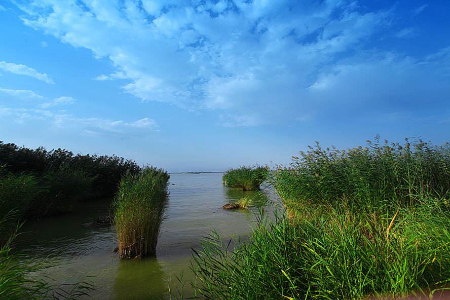
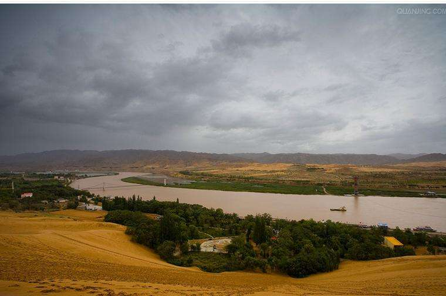
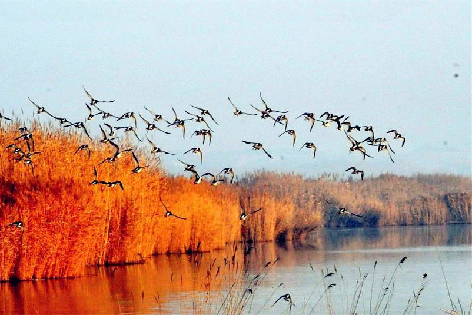

宁夏风光 NING XIA FENG GUANG 欢迎光临我的网站！ |
|  | 沙湖位于宁夏首府银川以北42公里的平罗县境内。提起沙湖，人们感叹最多的是它沙水相依的奇观，沙与水原本该是势不相容的，但在这里，一切都浑然天成。是沙湖，南沙北湖，湖润金沙，沙抱翠湖。湖水如海，柔沙似绸，天水一色，苇丛若画的沙湖，犹如一颗璀璨的明珠，镶嵌在美丽富饶的宁夏平原上，沙湖以自然景观为主体，资源蕴藏量丰富，"沙、水、苇、鸟、山、荷"六大景源有机结合，构成独具特色的秀丽景观。沙湖位于宁夏首府银川以北42公里的平罗县境内。提起沙湖，人们感叹最多的是它沙水相依的奇观，沙与水原本该是势不相容的，但在这里，一切都浑然天成。是沙湖，南沙北湖，湖润金沙，沙抱翠湖。湖水如海，柔沙似绸，天水一色，苇丛若画的沙湖，犹如一颗璀璨的明珠，镶嵌在美丽富饶的宁夏平原上，沙湖以自然景观为主体，资源蕴藏量丰富，"沙、水、苇、鸟、山、荷"六大景源有机结合，构成独具特色的秀丽景观。 |
|  | 初夏，湖中新芦苇如茂林修竹，郁郁葱葱，微风吹来，婆娑作响，荷花苑里，荷花亭亭玉立，宛若绿伞密布。入秋，苇花绽放，绿里透黄，正是鱼肥鸟集的大好时光。沙湖的鸟有130多种。在洁净温凉的湖水里常年生长着几十种鱼，不仅有常见的鲤鱼、鲢鱼、草鱼、鲫鱼，而且有北方罕见的武昌鱼。体长160厘米、60多斤重的娃娃鱼（大鲵）和体围1米多的大鳖也出自塞外沙湖。 |
|  | 秋天的沙湖，芦苇是一簇接着一簇地黄，一捆一捆地金，在水天一色湛蓝的映衬下愈发显得绚丽摄魂。沙湖秋天的鸟儿-苍鹭，成群结队场面颇为壮观，与周围景色交替组成了一场视觉盛宴！众鸟齐飞的壮观景象，金黄的秋叶和通透的蓝天， 仿佛一幅绝美的惊世画卷！湖傍金沙，沙环碧湖，沙水相连，巧夺天工！沙湖之美，为宁夏旅游首选之地，曾有歌词如此赞叹:金绸子沙滩，银绸子水。 |
网站制作：马宁
本站只为介绍宁夏的美丽风光而创建，部分内容采集自互联网，版权归原作者所有
作者联系方式 E-mail:maning@qq.com QQ:463195760